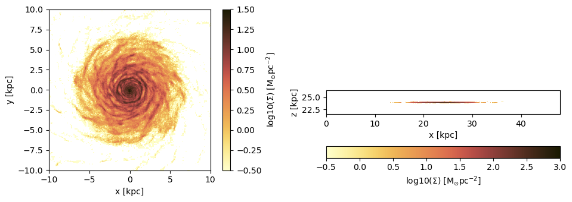
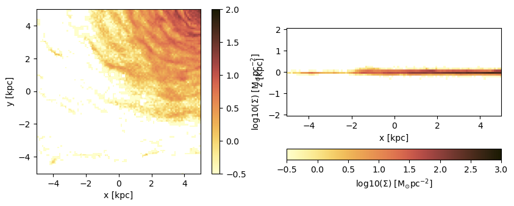
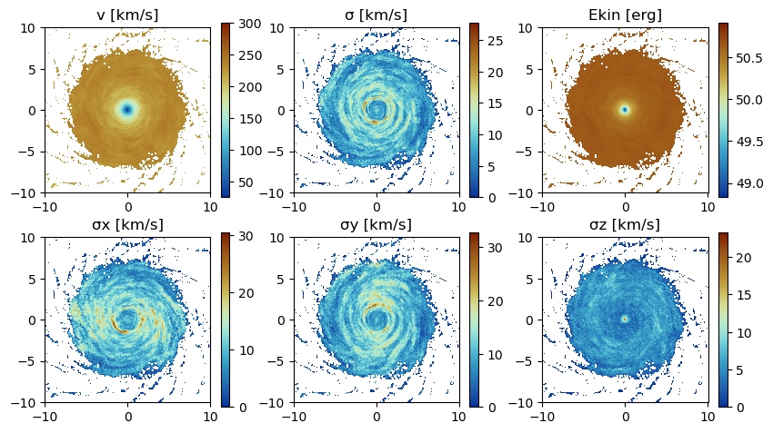
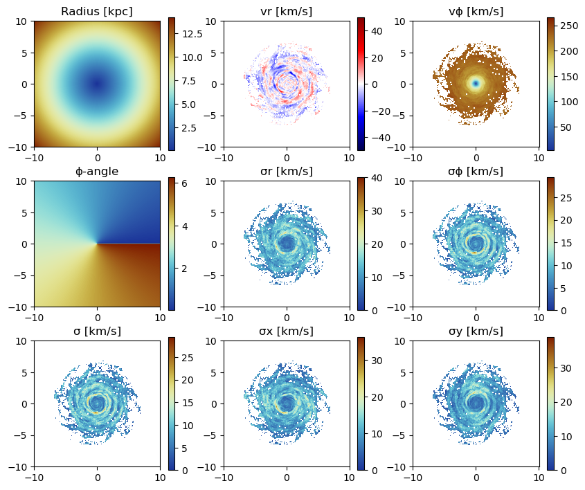
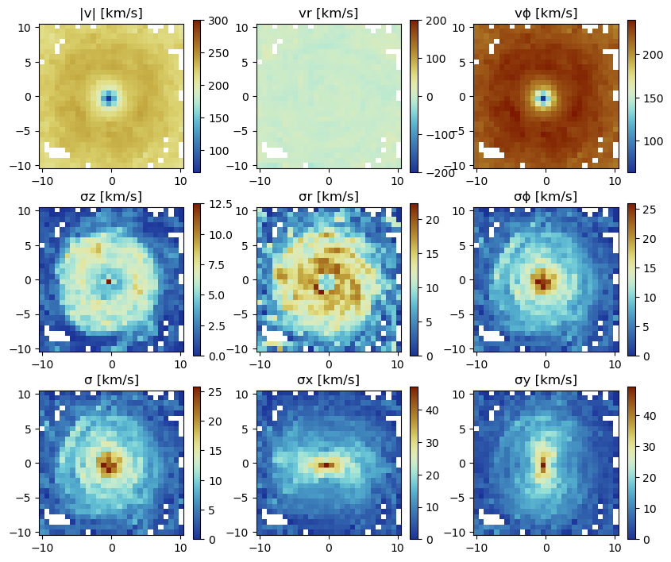
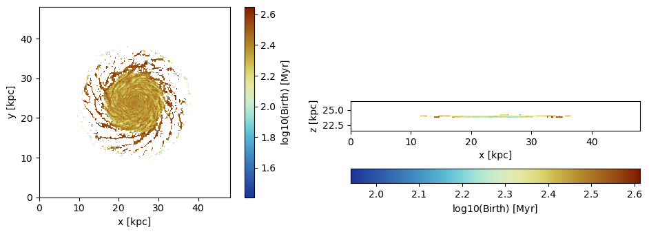
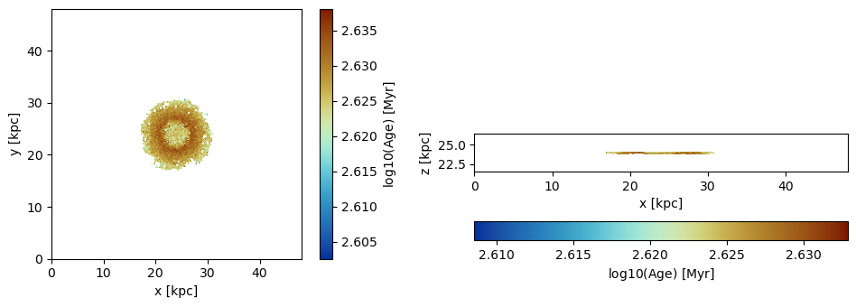

6. Particles: Projections
Load The Data
using Mera
info = getinfo(300, "../../testing/simulations/mw_L10");
particles = getparticles(info); [Mera]: 2023-04-10T13:44:15.828
Code: RAMSES
output [300] summary:
mtime: 2023-04-09T05:34:09
ctime: 2023-04-10T08:08:14.488
=======================================================
simulation time: 445.89 [Myr]
boxlen: 48.0 [kpc]
ncpu: 640
ndim: 3
-------------------------------------------------------
amr: true
level(s): 6 - 10 --> cellsize(s): 750.0 [pc] - 46.88 [pc]
-------------------------------------------------------
hydro: true
hydro-variables: 7 --> (:rho, :vx, :vy, :vz, :p, :var6, :var7)
hydro-descriptor: (:density, :velocity_x, :velocity_y, :velocity_z, :pressure, :scalar_00, :scalar_01)
γ: 1.6667
-------------------------------------------------------
gravity: true
gravity-variables: (:epot, :ax, :ay, :az)
-------------------------------------------------------
particles: true
- Nstars: 5.445150e+05
particle-variables: 7 --> (:vx, :vy, :vz, :mass, :family, :tag, :birth)
particle-descriptor: (:position_x, :position_y, :position_z, :velocity_x, :velocity_y, :velocity_z, :mass, :identity, :levelp, :family, :tag, :birth_time)
-------------------------------------------------------
rt: false
clumps: false
-------------------------------------------------------
namelist-file: ("&COOLING_PARAMS", "&SF_PARAMS", "&AMR_PARAMS", "&BOUNDARY_PARAMS", "&OUTPUT_PARAMS", "&POISSON_PARAMS", "&RUN_PARAMS", "&FEEDBACK_PARAMS", "&HYDRO_PARAMS", "&INIT_PARAMS", "&REFINE_PARAMS")
-------------------------------------------------------
timer-file: true
compilation-file: false
makefile: true
patchfile: true
=======================================================
[Mera]: Get particle data: 2023-04-10T13:44:20.554
Key vars=(:level, :x, :y, :z, :id, :family, :tag)
Using var(s)=(1, 2, 3, 4, 7) = (:vx, :vy, :vz, :mass, :birth)
domain:
xmin::xmax: 0.0 :: 1.0 ==> 0.0 [kpc] :: 48.0 [kpc]
ymin::ymax: 0.0 :: 1.0 ==> 0.0 [kpc] :: 48.0 [kpc]
zmin::zmax: 0.0 :: 1.0 ==> 0.0 [kpc] :: 48.0 [kpc]
Found 5.445150e+05 particles
Memory used for data table :38.42913246154785 MB
-------------------------------------------------------particles.dataTable with 544515 rows, 12 columns:
Columns:
# colname type
────────────────────
1 level Int32
2 x Float64
3 y Float64
4 z Float64
5 id Int32
6 family Int8
7 tag Int8
8 vx Float64
9 vy Float64
10 vz Float64
11 mass Float64
12 birth Float64Projection of Predefined Quantities
See the possible variables:
projection()Predefined vars for projections:
------------------------------------------------
=====================[gas]:=====================
-all the non derived hydro vars-
:cpu, :level, :rho, :cx, :cy, :cz, :vx, :vy, :vz, :p, var6,...
further possibilities: :rho, :density, :ρ
-derived hydro vars-
:x, :y, :z
:sd or :Σ or :surfacedensity
:mass, :cellsize, :freefall_time
:cs, :mach, :jeanslength, :jeansnumber
:t, :Temp, :Temperature with p/rho
==================[particles]:==================
all the non derived vars:
:cpu, :level, :id, :family, :tag
:x, :y, :z, :vx, :vy, :vz, :mass, :birth, :metal....
-derived particle vars-
:age
==============[gas or particles]:===============
:v, :ekin
squared => :vx2, :vy2, :vz2
velocity dispersion => σx, σy, σz, σ
related to a given center:
---------------------------
:vr_cylinder, vr_sphere (radial components)
:vϕ_cylinder, :vθ
squared => :vr_cylinder2, :vϕ_cylinder2
velocity dispersion => σr_cylinder, σϕ_cylinder
2d maps (not projected) => :r_cylinder, :ϕ
------------------------------------------------Projection of a Single Quantity in Different Directions (z,y,x)
Here we project the surface density in the z-direction of the data within a particular vertical range (domain=[0:1]) on a grid corresponding to level=9. Pass any object of PartDataType (here: "particles") to the projection-function and select a variable by a Symbol (here: :sd = :surfacedensity = :Σ in Msol/pc^3)
proj_z = projection(particles, :sd, unit=:Msol_pc2, lmax=9, zrange=[0.45,0.55])
proj_z = projection(particles, :sd, :Msol_pc2, lmax=9, zrange=[0.45,0.55], verbose=false) # The keyword "unit" (singular) can be omit if the following order is preserved: data-object, quantity, unit.
proj_x = projection(particles, :sd, :Msol_pc2, lmax=9, direction = :x, zrange=[0.45,0.55], verbose=false); # Project the surface density in x-direction[Mera]: 2023-04-10T13:44:30.854
domain:
xmin::xmax: 0.0 :: 1.0 ==> 0.0 [kpc] :: 48.0 [kpc]
ymin::ymax: 0.0 :: 1.0 ==> 0.0 [kpc] :: 48.0 [kpc]
zmin::zmax: 0.45 :: 0.55 ==> 21.6 [kpc] :: 26.4 [kpc]
Effective resolution: 512^2
Pixel size: 93.75 [pc]
Simulation min.: 46.875 [pc]Select a Range Related to a Center
See also in the documentation for: load data by selection
cv = (particles.boxlen / 2.) * particles.scale.kpc # provide the box-center in kpc
proj_z = projection(particles, :sd, :Msol_pc2, lmax=9,
xrange=[-10.,10.], yrange=[-10.,10.], zrange=[-2.,2.],
center=[cv,cv,cv], range_unit=:kpc);[Mera]: 2023-04-10T13:44:38.556
center: [0.5, 0.5, 0.5] ==> [24.0 [kpc] :: 24.0 [kpc] :: 24.0 [kpc]]
domain:
xmin::xmax: 0.2916667 :: 0.7083333 ==> 14.0 [kpc] :: 34.0 [kpc]
ymin::ymax: 0.2916667 :: 0.7083333 ==> 14.0 [kpc] :: 34.0 [kpc]
zmin::zmax: 0.4583333 :: 0.5416667 ==> 22.0 [kpc] :: 26.0 [kpc]
Effective resolution: 512^2
Pixel size: 93.75 [pc]
Simulation min.: 46.875 [pc]Use the short notation for the box center :bc or :boxcenter for all dimensions (x,y,z):
proj_z = projection(particles, :sd, :Msol_pc2, lmax=9,
xrange=[-10.,10.], yrange=[-10.,10.], zrange=[-2.,2.],
center=[:boxcenter], range_unit=:kpc);[Mera]: 2023-04-10T13:44:42.484
center: [0.5, 0.5, 0.5] ==> [24.0 [kpc] :: 24.0 [kpc] :: 24.0 [kpc]]
domain:
xmin::xmax: 0.2916667 :: 0.7083333 ==> 14.0 [kpc] :: 34.0 [kpc]
ymin::ymax: 0.2916667 :: 0.7083333 ==> 14.0 [kpc] :: 34.0 [kpc]
zmin::zmax: 0.4583333 :: 0.5416667 ==> 22.0 [kpc] :: 26.0 [kpc]
Effective resolution: 512^2
Pixel size: 93.75 [pc]
Simulation min.: 46.875 [pc]proj_z = projection(particles, :sd, :Msol_pc2, lmax=9,
xrange=[-10.,10.], yrange=[-10.,10.], zrange=[-2.,2.],
center=[:bc], range_unit=:kpc);[Mera]: 2023-04-10T13:44:43.180
center: [0.5, 0.5, 0.5] ==> [24.0 [kpc] :: 24.0 [kpc] :: 24.0 [kpc]]
domain:
xmin::xmax: 0.2916667 :: 0.7083333 ==> 14.0 [kpc] :: 34.0 [kpc]
ymin::ymax: 0.2916667 :: 0.7083333 ==> 14.0 [kpc] :: 34.0 [kpc]
zmin::zmax: 0.4583333 :: 0.5416667 ==> 22.0 [kpc] :: 26.0 [kpc]
Effective resolution: 512^2
Pixel size: 93.75 [pc]
Simulation min.: 46.875 [pc]Use the box center notation for individual dimensions, here x,z:
proj_z = projection(particles, :sd, :Msol_pc2, lmax=9,
xrange=[-10.,10.], yrange=[-10.,10.], zrange=[-2.,2.],
center=[:bc, 24., :bc], range_unit=:kpc);[Mera]: 2023-04-10T13:44:46.717
center: [0.5, 0.5, 0.5] ==> [24.0 [kpc] :: 24.0 [kpc] :: 24.0 [kpc]]
domain:
xmin::xmax: 0.2916667 :: 0.7083333 ==> 14.0 [kpc] :: 34.0 [kpc]
ymin::ymax: 0.2916667 :: 0.7083333 ==> 14.0 [kpc] :: 34.0 [kpc]
zmin::zmax: 0.4583333 :: 0.5416667 ==> 22.0 [kpc] :: 26.0 [kpc]
Effective resolution: 512^2
Pixel size: 93.75 [pc]
Simulation min.: 46.875 [pc]Get Multiple Quantities
Get several quantities with one function call by passing an array containing the selected variables (at least one entry). The keyword name for the units is now in plural.
proj1_x = projection(particles, [:sd], units=[:Msol_pc2], lmax=9,
direction = :x,
xrange=[-10.,10.],
yrange=[-10.,10.],
zrange=[-2.,2.],
center=[24.,24.,24.],
range_unit=:kpc);[Mera]: 2023-04-10T13:44:54.060
center: [0.5, 0.5, 0.5] ==> [24.0 [kpc] :: 24.0 [kpc] :: 24.0 [kpc]]
domain:
xmin::xmax: 0.2916667 :: 0.7083333 ==> 14.0 [kpc] :: 34.0 [kpc]
ymin::ymax: 0.2916667 :: 0.7083333 ==> 14.0 [kpc] :: 34.0 [kpc]
zmin::zmax: 0.4583333 :: 0.5416667 ==> 22.0 [kpc] :: 26.0 [kpc]
Effective resolution: 512^2
Pixel size: 93.75 [pc]
Simulation min.: 46.875 [pc]Pass an array containing several quantities to process and their corresponding units:
proj1_z = projection(particles, [:sd, :vx], units=[:Msol_pc2, :km_s], lmax=9,
direction = :x,
xrange=[-10.,10.],
yrange=[-10.,10.],
zrange=[-2.,2.],
center=[24.,24.,24.],
range_unit=:kpc);[Mera]: 2023-04-10T13:44:56.764
center: [0.5, 0.5, 0.5] ==> [24.0 [kpc] :: 24.0 [kpc] :: 24.0 [kpc]]
domain:
xmin::xmax: 0.2916667 :: 0.7083333 ==> 14.0 [kpc] :: 34.0 [kpc]
ymin::ymax: 0.2916667 :: 0.7083333 ==> 14.0 [kpc] :: 34.0 [kpc]
zmin::zmax: 0.4583333 :: 0.5416667 ==> 22.0 [kpc] :: 26.0 [kpc]
Effective resolution: 512^2
Pixel size: 93.75 [pc]
Simulation min.: 46.875 [pc]The function can be called without any keywords by preserving the following order: dataobject, variables, units
proj1_z = projection(particles, [:sd , :vx], [:Msol_pc2, :km_s], lmax=9,
direction = :x,
xrange=[-10.,10.],
yrange=[-10.,10.],
zrange=[-2.,2.],
center=[24.,24.,24.],
range_unit=:kpc);[Mera]: 2023-04-10T13:45:02.692
center: [0.5, 0.5, 0.5] ==> [24.0 [kpc] :: 24.0 [kpc] :: 24.0 [kpc]]
domain:
xmin::xmax: 0.2916667 :: 0.7083333 ==> 14.0 [kpc] :: 34.0 [kpc]
ymin::ymax: 0.2916667 :: 0.7083333 ==> 14.0 [kpc] :: 34.0 [kpc]
zmin::zmax: 0.4583333 :: 0.5416667 ==> 22.0 [kpc] :: 26.0 [kpc]
Effective resolution: 512^2
Pixel size: 93.75 [pc]
Simulation min.: 46.875 [pc]If all selected variables should be of the same unit use the following arguments: dataobject, array of quantities, unit (no array needed)
projvel_z = projection(particles, [:vx, :vy, :vz], :km_s, lmax=9,
xrange=[-10.,10.],
yrange=[-10.,10.],
zrange=[-2.,2.],
center=[24.,24.,24.],
range_unit=:kpc);[Mera]: 2023-04-10T13:45:05.474
center: [0.5, 0.5, 0.5] ==> [24.0 [kpc] :: 24.0 [kpc] :: 24.0 [kpc]]
domain:
xmin::xmax: 0.2916667 :: 0.7083333 ==> 14.0 [kpc] :: 34.0 [kpc]
ymin::ymax: 0.2916667 :: 0.7083333 ==> 14.0 [kpc] :: 34.0 [kpc]
zmin::zmax: 0.4583333 :: 0.5416667 ==> 22.0 [kpc] :: 26.0 [kpc]
Effective resolution: 512^2
Pixel size: 93.75 [pc]
Simulation min.: 46.875 [pc]Function Output
List the fields of the assigned object:
propertynames(projvel_z)(:maps, :maps_unit, :maps_lmax, :maps_mode, :lmax_projected, :lmin, :lmax, :ref_time, :ranges, :extent, :cextent, :ratio, :effres, :pixsize, :boxlen, :scale, :info)The projected 2D maps are stored in a dictionary:
projvel_z.maps # NaN for empty regionsDataStructures.SortedDict{Any, Any, Base.Order.ForwardOrdering} with 4 entries:
:sd => [0.0 0.0 … 0.0 0.0; 0.0 0.0 … 0.0 0.0; … ; 0.0 0.0 … 0.0 0.0; 0.0 0.0 …
:vx => [NaN NaN … NaN NaN; NaN NaN … NaN NaN; … ; NaN NaN … NaN NaN; NaN NaN …
:vy => [NaN NaN … NaN NaN; NaN NaN … NaN NaN; … ; NaN NaN … NaN NaN; NaN NaN …
:vz => [NaN NaN … NaN NaN; NaN NaN … NaN NaN; … ; NaN NaN … NaN NaN; NaN NaN …The maps can be accessed by giving the name of the dictionary:
proj1_z.maps[:sd]214×44 Matrix{Float64}:
0.0 0.0 0.0 0.0 0.0 0.0 0.0 0.0 … 0.0 0.0 0.0 0.0 0.0 0.0 0.0
0.0 0.0 0.0 0.0 0.0 0.0 0.0 0.0 0.0 0.0 0.0 0.0 0.0 0.0 0.0
0.0 0.0 0.0 0.0 0.0 0.0 0.0 0.0 0.0 0.0 0.0 0.0 0.0 0.0 0.0
0.0 0.0 0.0 0.0 0.0 0.0 0.0 0.0 0.0 0.0 0.0 0.0 0.0 0.0 0.0
0.0 0.0 0.0 0.0 0.0 0.0 0.0 0.0 0.0 0.0 0.0 0.0 0.0 0.0 0.0
0.0 0.0 0.0 0.0 0.0 0.0 0.0 0.0 … 0.0 0.0 0.0 0.0 0.0 0.0 0.0
0.0 0.0 0.0 0.0 0.0 0.0 0.0 0.0 0.0 0.0 0.0 0.0 0.0 0.0 0.0
0.0 0.0 0.0 0.0 0.0 0.0 0.0 0.0 0.0 0.0 0.0 0.0 0.0 0.0 0.0
0.0 0.0 0.0 0.0 0.0 0.0 0.0 0.0 0.0 0.0 0.0 0.0 0.0 0.0 0.0
0.0 0.0 0.0 0.0 0.0 0.0 0.0 0.0 0.0 0.0 0.0 0.0 0.0 0.0 0.0
0.0 0.0 0.0 0.0 0.0 0.0 0.0 0.0 … 0.0 0.0 0.0 0.0 0.0 0.0 0.0
0.0 0.0 0.0 0.0 0.0 0.0 0.0 0.0 0.0 0.0 0.0 0.0 0.0 0.0 0.0
0.0 0.0 0.0 0.0 0.0 0.0 0.0 0.0 0.0 0.0 0.0 0.0 0.0 0.0 0.0
⋮ ⋮ ⋱ ⋮
0.0 0.0 0.0 0.0 0.0 0.0 0.0 0.0 0.0 0.0 0.0 0.0 0.0 0.0 0.0
0.0 0.0 0.0 0.0 0.0 0.0 0.0 0.0 0.0 0.0 0.0 0.0 0.0 0.0 0.0
0.0 0.0 0.0 0.0 0.0 0.0 0.0 0.0 0.0 0.0 0.0 0.0 0.0 0.0 0.0
0.0 0.0 0.0 0.0 0.0 0.0 0.0 0.0 … 0.0 0.0 0.0 0.0 0.0 0.0 0.0
0.0 0.0 0.0 0.0 0.0 0.0 0.0 0.0 0.0 0.0 0.0 0.0 0.0 0.0 0.0
0.0 0.0 0.0 0.0 0.0 0.0 0.0 0.0 0.0 0.0 0.0 0.0 0.0 0.0 0.0
0.0 0.0 0.0 0.0 0.0 0.0 0.0 0.0 0.0 0.0 0.0 0.0 0.0 0.0 0.0
0.0 0.0 0.0 0.0 0.0 0.0 0.0 0.0 0.0 0.0 0.0 0.0 0.0 0.0 0.0
0.0 0.0 0.0 0.0 0.0 0.0 0.0 0.0 … 0.0 0.0 0.0 0.0 0.0 0.0 0.0
0.0 0.0 0.0 0.0 0.0 0.0 0.0 0.0 0.0 0.0 0.0 0.0 0.0 0.0 0.0
0.0 0.0 0.0 0.0 0.0 0.0 0.0 0.0 0.0 0.0 0.0 0.0 0.0 0.0 0.0
0.0 0.0 0.0 0.0 0.0 0.0 0.0 0.0 0.0 0.0 0.0 0.0 0.0 0.0 0.0The units of the maps are stored in:
projvel_z.maps_unitDataStructures.SortedDict{Any, Any, Base.Order.ForwardOrdering} with 4 entries:
:sd => :standard
:vx => :km_s
:vy => :km_s
:vz => :km_sThe following fields are helpful for further calculations or plots.
projvel_z.ranges # normalized to the domain=[0:1]6-element Vector{Float64}:
0.29166666666647767
0.7083333333328743
0.29166666666647767
0.7083333333328743
0.4583333333330363
0.5416666666663156projvel_z.extent # ranges in code units4-element Vector{Float64}:
13.96875
34.03125
13.96875
34.03125projvel_z.cextent # ranges in code units relative to a given center (by default: box center)4-element Vector{Float64}:
-10.031250000015554
10.031249999984446
-10.031250000015554
10.031249999984446proj1_z.ratio # the ratio between the two ranges4.863636363636363Plot Maps with Python
proj_z = projection(particles, :sd, :Msol_pc2, lmax=9,
zrange=[-2.,2.], center=[:boxcenter], range_unit=:kpc,
verbose=false)
proj_x = projection(particles, :sd, :Msol_pc2, lmax=9,
zrange=[-2.,2.], center=[:boxcenter], range_unit=:kpc,
verbose=false,
direction = :x);Python functions can be directly called in Julia, which gives the opportunity, e.g. to use the Matplotlib library.
using PyPlot
using ColorSchemes
cmap = ColorMap(ColorSchemes.lajolla.colors) # See http://www.fabiocrameri.ch/colourmaps.php
cmap2 = ColorMap(reverse(ColorSchemes.roma.colors))
figure(figsize=(10, 3.5))
subplot(1,2,1)
im = imshow( log10.( permutedims(proj_z.maps[:sd])), cmap=cmap, aspect=proj_z.ratio, origin="lower", extent=proj_z.cextent, vmin=-0.5, vmax=1.5)
xlabel("x [kpc]")
ylabel("y [kpc]")
cb = colorbar(im, label=L"\mathrm{log10(\Sigma) \ [M_{\odot} pc^{-2}]}")
subplot(1,2,2)
im = imshow( log10.( permutedims(proj_x.maps[:sd])), cmap=cmap, origin="lower", extent=proj_x.cextent, vmin=-0.5, vmax=3)
xlabel("x [kpc]")
ylabel("z [kpc]")
cb = colorbar(im, label=L"\mathrm{log10(\Sigma) \ [M_{\odot} pc^{-2}]}",orientation="horizontal", pad=0.2);
tight_layout()
Project a specific spatial range and plot the axes of the map relative to the box-center (given by keyword: data_center):
proj_z = projection(particles, :sd, :Msol_pc2, lmax=9,
xrange=[-10.,0.], yrange=[-10.,0.], zrange=[-2.,2.], center=[:boxcenter], range_unit=:kpc,
verbose=false,
data_center=[24.,24.,24.], data_center_unit=:kpc)
proj_x = projection(particles, :sd, :Msol_pc2, lmax=9,
xrange=[-10.,0.], yrange=[-10.,0.], zrange=[-2.,2.], center=[:boxcenter], range_unit=:kpc,
verbose=false,
data_center=[24.,24.,24.], data_center_unit=:kpc,
direction = :x);figure(figsize=(10, 3.5))
subplot(1,2,1)
im = imshow( log10.( permutedims(proj_z.maps[:sd])), cmap=cmap, aspect=proj_z.ratio, origin="lower", extent=proj_z.cextent, vmin=-0.5, vmax=2.)
xlabel("x [kpc]")
ylabel("y [kpc]")
cb = colorbar(im, label=L"\mathrm{log10(\Sigma) \ [M_{\odot} pc^{-2}]}")
subplot(1,2,2)
im = imshow( log10.( permutedims(proj_x.maps[:sd])), cmap=cmap, origin="lower", extent=proj_x.cextent, vmin=-0.5, vmax=3)
xlabel("x [kpc]")
ylabel("z [kpc]")
cb = colorbar(im, label=L"\mathrm{log10(\Sigma) \ [M_{\odot} pc^{-2}]}",orientation="horizontal", pad=0.2);Plot the axes of the map relative to the map-center (given by keyword: data_center):
proj_z = projection(particles, :sd, :Msol_pc2, lmax=9,
xrange=[-10.,0.], yrange=[-10.,0.], zrange=[-2.,2.], center=[:boxcenter], range_unit=:kpc,
verbose=false,
data_center=[19.,19.,24.], data_center_unit=:kpc)
proj_x = projection(particles, :sd, :Msol_pc2, lmax=9,
xrange=[-10.,0.], yrange=[-10.,0.], zrange=[-2.,2.], center=[:boxcenter], range_unit=:kpc,
verbose=false,
data_center=[19.,19.,24.], data_center_unit=:kpc,
direction = :x);figure(figsize=(10, 3.5))
subplot(1,2,1)
im = imshow( log10.( permutedims(proj_z.maps[:sd])), cmap=cmap, aspect=proj_z.ratio, origin="lower", extent=proj_z.cextent, vmin=-0.5, vmax=2.)
xlabel("x [kpc]")
ylabel("y [kpc]")
cb = colorbar(im, label=L"\mathrm{log10(\Sigma) \ [M_{\odot} pc^{-2}]}")
subplot(1,2,2)
im = imshow( log10.( permutedims(proj_x.maps[:sd])), cmap=cmap, origin="lower", extent=proj_x.cextent, vmin=-0.5, vmax=3)
xlabel("x [kpc]")
ylabel("z [kpc]")
cb = colorbar(im, label=L"\mathrm{log10(\Sigma) \ [M_{\odot} pc^{-2}]}",orientation="horizontal", pad=0.2);
Projections of Derived Kinematic Data
Use quantities in cartesian coordinates:
Project the following derived data (mass weighted by default): The absolute value of the velocity :v, the velocity dispersion :σ in different directions and the kinetic energy :ekin. The Julia language supports Unicode characters and can be inserted by e.g. "\sigma + tab-key" leading to: σ.
proj_z = projection(particles, [:v, :σ, :σx, :σy, :σz, :ekin],
units=[:km_s,:km_s,:km_s,:km_s,:km_s,:erg],
lmax=9,
xrange=[-10.,10.], yrange=[-10.,10.], zrange=[-2.,2.],
center=[24.,24.,24.], range_unit=:kpc);[Mera]: 2023-04-10T13:49:11.587
center: [0.5, 0.5, 0.5] ==> [24.0 [kpc] :: 24.0 [kpc] :: 24.0 [kpc]]
domain:
xmin::xmax: 0.2916667 :: 0.7083333 ==> 14.0 [kpc] :: 34.0 [kpc]
ymin::ymax: 0.2916667 :: 0.7083333 ==> 14.0 [kpc] :: 34.0 [kpc]
zmin::zmax: 0.4583333 :: 0.5416667 ==> 22.0 [kpc] :: 26.0 [kpc]
Effective resolution: 512^2
Pixel size: 93.75 [pc]
Simulation min.: 46.875 [pc]For the velocity dispersion additional maps are created to created the mass-weighted quantity: E. g.: σx = sqrt( <vx^2> - < vx >^2 )
proj_z.mapsDataStructures.SortedDict{Any, Any, Base.Order.ForwardOrdering} with 14 entries:
:ekin => [NaN NaN … NaN NaN; NaN NaN … NaN NaN; … ; NaN NaN … NaN NaN; NaN Na…
:sd => [0.0 0.0 … 0.0 0.0; 0.0 0.0 … 0.0 0.0; … ; 0.0 0.0 … 0.0 0.0; 0.0 0.…
:v => [NaN NaN … NaN NaN; NaN NaN … NaN NaN; … ; NaN NaN … NaN NaN; NaN Na…
:v2 => [NaN NaN … NaN NaN; NaN NaN … NaN NaN; … ; NaN NaN … NaN NaN; NaN Na…
:vx => [NaN NaN … NaN NaN; NaN NaN … NaN NaN; … ; NaN NaN … NaN NaN; NaN Na…
:vx2 => [NaN NaN … NaN NaN; NaN NaN … NaN NaN; … ; NaN NaN … NaN NaN; NaN Na…
:vy => [NaN NaN … NaN NaN; NaN NaN … NaN NaN; … ; NaN NaN … NaN NaN; NaN Na…
:vy2 => [NaN NaN … NaN NaN; NaN NaN … NaN NaN; … ; NaN NaN … NaN NaN; NaN Na…
:vz => [NaN NaN … NaN NaN; NaN NaN … NaN NaN; … ; NaN NaN … NaN NaN; NaN Na…
:vz2 => [NaN NaN … NaN NaN; NaN NaN … NaN NaN; … ; NaN NaN … NaN NaN; NaN Na…
:σ => [NaN NaN … NaN NaN; NaN NaN … NaN NaN; … ; NaN NaN … NaN NaN; NaN Na…
:σx => [NaN NaN … NaN NaN; NaN NaN … NaN NaN; … ; NaN NaN … NaN NaN; NaN Na…
:σy => [NaN NaN … NaN NaN; NaN NaN … NaN NaN; … ; NaN NaN … NaN NaN; NaN Na…
:σz => [NaN NaN … NaN NaN; NaN NaN … NaN NaN; … ; NaN NaN … NaN NaN; NaN Na…proj_z.maps_unitDataStructures.SortedDict{Any, Any, Base.Order.ForwardOrdering} with 14 entries:
:ekin => :erg
:sd => :standard
:v => :km_s
:v2 => :standard
:vx => :standard
:vx2 => :standard
:vy => :standard
:vy2 => :standard
:vz => :standard
:vz2 => :standard
:σ => :km_s
:σx => :km_s
:σy => :km_s
:σz => :km_susedmemory(proj_z);Memory used: 4.919 MBfigure(figsize=(10, 5.5))
subplot(2, 3, 1)
title("v [km/s]")
imshow( (permutedims(proj_z.maps[:v]) ), cmap=cmap2, origin="lower", extent=proj_z.cextent, vmax=300.)
colorbar()
subplot(2, 3, 2)
title("σ [km/s]")
imshow( (permutedims(proj_z.maps[:σ]) ), cmap=cmap2, origin="lower", extent=proj_z.cextent)
colorbar()
subplot(2, 3, 3)
title("Ekin [erg]")
imshow( log10.(permutedims(proj_z.maps[:ekin]) ), cmap=cmap2, origin="lower", extent=proj_z.cextent)
colorbar()
subplot(2, 3, 4)
title("σx [km/s]")
imshow( (permutedims(proj_z.maps[:σx]) ), cmap=cmap2, origin="lower", extent=proj_z.cextent)
colorbar()
subplot(2, 3, 5)
title("σy [km/s]")
imshow( (permutedims(proj_z.maps[:σy]) ), cmap=cmap2, origin="lower", extent=proj_z.cextent)
colorbar()
subplot(2, 3, 6)
title("σz [km/s]")
imshow( (permutedims(proj_z.maps[:σz]) ), cmap=cmap2, origin="lower", extent=proj_z.cextent)
colorbar();

Use quantities in cylindrical coordinates:
Face-on disc (z-direction)
For the cylindrical or spherical components of a quantity, the center of the coordinate system is used (keywords: datacenter = center default) and can be given with the keyword "datacenter" and its units with "datacenterunit". Additionally, the quantities that are based on cartesian coordinates can be given.
proj_z = projection(particles, [:v, :σ, :σx, :σy, :ϕ, :r_cylinder, :vr_cylinder, :vϕ_cylinder, :σr_cylinder, :σϕ_cylinder],
units=[:km_s,:km_s,:km_s, :km_s, :standard, :kpc, :km_s, :km_s, :km_s, :km_s],
xrange=[-10.,10.], yrange=[-10.,10.], zrange=[-2.,2.],
center=[:boxcenter], range_unit=:kpc,
data_center=[24.,24.,24.], data_center_unit=:kpc); [Mera]: 2023-04-10T13:50:46.517
center: [0.5, 0.5, 0.5] ==> [24.0 [kpc] :: 24.0 [kpc] :: 24.0 [kpc]]
domain:
xmin::xmax: 0.2916667 :: 0.7083333 ==> 14.0 [kpc] :: 34.0 [kpc]
ymin::ymax: 0.2916667 :: 0.7083333 ==> 14.0 [kpc] :: 34.0 [kpc]
zmin::zmax: 0.4583333 :: 0.5416667 ==> 22.0 [kpc] :: 26.0 [kpc]
Effective resolution: 1024^2
Pixel size: 46.875 [pc]
Simulation min.: 46.875 [pc]
Progress: 100%|█████████████████████████████████████████| Time: 0:00:01proj_z.mapsDataStructures.SortedDict{Any, Any, Base.Order.ForwardOrdering} with 18 entries:
:r_cylinder => [14.0758 14.0427 … 14.1201 14.1534; 14.0427 14.0096 … 14.087…
:sd => [0.0 0.0 … 0.0 0.0; 0.0 0.0 … 0.0 0.0; … ; 0.0 0.0 … 0.0 0.0…
:v => [NaN NaN … NaN NaN; NaN NaN … NaN NaN; … ; NaN NaN … NaN NaN…
:v2 => [NaN NaN … NaN NaN; NaN NaN … NaN NaN; … ; NaN NaN … NaN NaN…
:vr_cylinder => [NaN NaN … NaN NaN; NaN NaN … NaN NaN; … ; NaN NaN … NaN NaN…
:vr_cylinder2 => [NaN NaN … NaN NaN; NaN NaN … NaN NaN; … ; NaN NaN … NaN NaN…
:vx => [NaN NaN … NaN NaN; NaN NaN … NaN NaN; … ; NaN NaN … NaN NaN…
:vx2 => [NaN NaN … NaN NaN; NaN NaN … NaN NaN; … ; NaN NaN … NaN NaN…
:vy => [NaN NaN … NaN NaN; NaN NaN … NaN NaN; … ; NaN NaN … NaN NaN…
:vy2 => [NaN NaN … NaN NaN; NaN NaN … NaN NaN; … ; NaN NaN … NaN NaN…
:vϕ_cylinder => [NaN NaN … NaN NaN; NaN NaN … NaN NaN; … ; NaN NaN … NaN NaN…
:vϕ_cylinder2 => [NaN NaN … NaN NaN; NaN NaN … NaN NaN; … ; NaN NaN … NaN NaN…
:σ => [NaN NaN … NaN NaN; NaN NaN … NaN NaN; … ; NaN NaN … NaN NaN…
:σr_cylinder => [NaN NaN … NaN NaN; NaN NaN … NaN NaN; … ; NaN NaN … NaN NaN…
:σx => [NaN NaN … NaN NaN; NaN NaN … NaN NaN; … ; NaN NaN … NaN NaN…
:σy => [NaN NaN … NaN NaN; NaN NaN … NaN NaN; … ; NaN NaN … NaN NaN…
:σϕ_cylinder => [NaN NaN … NaN NaN; NaN NaN … NaN NaN; … ; NaN NaN … NaN NaN…
:ϕ => [3.92699 3.92463 … 2.35306 2.35073; 3.92935 3.92699 … 2.3507…proj_z.maps_unitDataStructures.SortedDict{Any, Any, Base.Order.ForwardOrdering} with 18 entries:
:r_cylinder => :kpc
:sd => :standard
:v => :km_s
:v2 => :standard
:vr_cylinder => :km_s
:vr_cylinder2 => :standard
:vx => :standard
:vx2 => :standard
:vy => :standard
:vy2 => :standard
:vϕ_cylinder => :km_s
:vϕ_cylinder2 => :standard
:σ => :km_s
:σr_cylinder => :km_s
:σx => :km_s
:σy => :km_s
:σϕ_cylinder => :km_s
:ϕ => :radianfigure(figsize=(10, 8.5))
subplot(3, 3, 1)
title("Radius [kpc]")
imshow( permutedims(proj_z.maps[:r_cylinder] ), cmap=cmap2, origin="lower", extent=proj_z.cextent)
colorbar()
subplot(3, 3, 2)
title("vr [km/s]")
imshow( permutedims(proj_z.maps[:vr_cylinder] ), cmap="seismic", origin="lower", extent=proj_z.cextent, vmin=-50.,vmax=50.)
colorbar()
subplot(3, 3, 3)
title("vϕ [km/s]")
imshow( permutedims(proj_z.maps[:vϕ_cylinder] ), cmap=cmap2, origin="lower", extent=proj_z.cextent)
colorbar()
subplot(3, 3, 4)
title("ϕ-angle")
imshow( (permutedims(proj_z.maps[:ϕ]) ), cmap=cmap2, origin="lower", extent=proj_z.cextent)
colorbar()
subplot(3, 3, 5)
title("σr [km/s]")
imshow( permutedims(proj_z.maps[:σr_cylinder] ), cmap=cmap2, origin="lower", extent=proj_z.cextent)
colorbar()
subplot(3, 3, 6)
title("σϕ [km/s]")
imshow( permutedims(proj_z.maps[:σϕ_cylinder] ), cmap=cmap2, origin="lower", extent=proj_z.cextent)
colorbar()
subplot(3, 3, 7)
title("σ [km/s]")
imshow( (permutedims(proj_z.maps[:σ]) ), cmap=cmap2, origin="lower", extent=proj_z.cextent)
colorbar()
subplot(3, 3, 8)
title("σx [km/s]")
imshow( permutedims(proj_z.maps[:σx] ), cmap=cmap2, origin="lower", extent=proj_z.cextent)
colorbar()
subplot(3, 3, 9)
title("σy [km/s]")
imshow( permutedims(proj_z.maps[:σy] ), cmap=cmap2, origin="lower", extent=proj_z.cextent)
colorbar();
Project on a Coarser Grid
lmax
The default is the projection on the maximum loaded grid level (always provided in the output). Choose a smaller/larger level with the keyword lmax (independend on the maximum level of the simulation) to project on a coarser/finer grid. By default, the data is assumed to be in the center of the simulation box.
proj_z = projection(particles,
[:v, :σ, :σx, :σy, :σz, :vr_cylinder, :vϕ_cylinder, :σr_cylinder, :σϕ_cylinder],
:km_s,
xrange=[-10.,10.], yrange=[-10.,10.], zrange=[-2.,2.],
center=[:boxcenter], range_unit=:kpc,
lmax=6); [Mera]: 2023-04-10T14:35:46.954
center: [0.5, 0.5, 0.5] ==> [24.0 [kpc] :: 24.0 [kpc] :: 24.0 [kpc]]
domain:
xmin::xmax: 0.2916667 :: 0.7083333 ==> 14.0 [kpc] :: 34.0 [kpc]
ymin::ymax: 0.2916667 :: 0.7083333 ==> 14.0 [kpc] :: 34.0 [kpc]
zmin::zmax: 0.4583333 :: 0.5416667 ==> 22.0 [kpc] :: 26.0 [kpc]
Effective resolution: 64^2
Pixel size: 750.0 [pc]
Simulation min.: 46.875 [pc]The projection onto the maximum loaded grid is always provided:
proj_z.mapsDataStructures.SortedDict{Any, Any, Base.Order.ForwardOrdering} with 19 entries:
:sd => [3.6988e-5 6.11725e-5 … 2.84523e-5 4.26785e-6; 0.000146885 8…
:v => [215.727 217.893 … 213.689 211.398; 211.909 214.371 … 215.29…
:v2 => [10.8327 11.0472 … 10.6218 10.3945; 10.4511 10.6909 … 10.782…
:vr_cylinder => [-4.97035 9.83744 … 0.326624 -5.23378; -8.36334 3.71396 … 7.…
:vr_cylinder2 => [0.0231364 0.0346302 … 0.0196151 0.0344127; 0.0339309 0.0312…
:vx => [2.38824 2.13472 … -2.30736 -2.28246; 2.4166 2.28742 … -2.49…
:vx2 => [5.71099 4.56492 … 5.33794 5.23511; 5.844 5.24859 … 6.2532 6…
:vy => [-2.25778 -2.54366 … -2.29652 -2.26901; -2.14059 -2.32778 … …
:vy2 => [5.12035 6.48209 … 5.28291 5.15929; 4.60593 5.44099 … 4.5285…
:vz => [-0.032174 0.00624848 … -0.0229633 0.00636579; -0.0269481 -0…
:vz2 => [0.00140393 0.000219812 … 0.000962049 0.000127987; 0.0011519…
:vϕ_cylinder => [215.479 217.553 … 213.481 211.046; 211.546 214.042 … 214.91…
:vϕ_cylinder2 => [10.8082 11.0124 … 10.6012 10.36; 10.416 10.6583 … 10.7443 1…
:σ => [6.62266 5.19183 … 3.45808 2.9201; 5.96424 4.11213 … 3.61926…
:σr_cylinder => [8.64782 7.22072 … 9.17826 10.9812; 8.71558 10.9816 … 10.005…
:σx => [5.59831 5.83217 … 7.77318 10.4683; 4.16244 8.36784 … 6.5268…
:σy => [9.89835 7.14297 … 6.19364 6.84324; 10.118 9.82426 … 9.42142…
:σz => [1.25926 0.88166 … 1.36727 0.613275; 1.35303 2.02241 … 1.188…
:σϕ_cylinder => [6.7421 5.02267 … 3.52611 2.97303; 6.19423 4.23835 … 3.69795…proj_z.maps_unitDataStructures.SortedDict{Any, Any, Base.Order.ForwardOrdering} with 19 entries:
:sd => :standard
:v => :km_s
:v2 => :standard
:vr_cylinder => :km_s
:vr_cylinder2 => :standard
:vx => :standard
:vx2 => :standard
:vy => :standard
:vy2 => :standard
:vz => :standard
:vz2 => :standard
:vϕ_cylinder => :km_s
:vϕ_cylinder2 => :standard
:σ => :km_s
:σr_cylinder => :km_s
:σx => :km_s
:σy => :km_s
:σz => :km_s
:σϕ_cylinder => :km_sfigure(figsize=(10, 8.5))
subplot(3, 3, 1)
title("|v| [km/s]")
imshow( permutedims(proj_z.maps[:v] ), cmap=cmap2, origin="lower", extent=proj_z.cextent, vmax=300.)
colorbar()
subplot(3, 3, 2)
title("vr [km/s]")
imshow( permutedims(proj_z.maps[:vr_cylinder] ), cmap=cmap2, origin="lower", extent=proj_z.cextent, vmin=-200.,vmax=200.)
colorbar()
subplot(3, 3, 3)
title("vϕ [km/s]")
imshow( permutedims(proj_z.maps[:vϕ_cylinder] ), cmap=cmap2, origin="lower", extent=proj_z.cextent)
colorbar()
subplot(3, 3, 4)
title("σz [km/s]")
imshow( (permutedims(proj_z.maps[:σz]) ), cmap=cmap2, origin="lower", extent=proj_z.cextent)
colorbar()
subplot(3, 3, 5)
title("σr [km/s]")
imshow( (permutedims(proj_z.maps[:σr_cylinder] )), cmap=cmap2, origin="lower", extent=proj_z.cextent)
colorbar()
subplot(3, 3, 6)
title("σϕ [km/s]")
imshow( (permutedims(proj_z.maps[:σϕ_cylinder] )), cmap=cmap2, origin="lower", extent=proj_z.cextent)
colorbar()
subplot(3, 3, 7)
title("σ [km/s]")
imshow( (permutedims(proj_z.maps[:σ]) ), cmap=cmap2, origin="lower", extent=proj_z.cextent)
colorbar()
subplot(3, 3, 8)
title("σx [km/s]")
imshow( (permutedims(proj_z.maps[:σx] )), cmap=cmap2, origin="lower", extent=proj_z.cextent)
colorbar()
subplot(3, 3, 9)
title("σy [km/s]")
imshow( (permutedims(proj_z.maps[:σy] )), cmap=cmap2, origin="lower", extent=proj_z.cextent)
colorbar();
res
Choose the effective resolution (related to the full box) of the projected grid:
proj_z = projection(particles,
[:v, :σ, :σx, :σy, :σz, :vr_cylinder, :vϕ_cylinder, :σr_cylinder, :σϕ_cylinder],
:km_s,
xrange=[-10.,10.], yrange=[-10.,10.], zrange=[-2.,2.],
center=[:boxcenter], range_unit=:kpc,
res=100); [Mera]: 2023-04-10T14:36:28.832
center: [0.5, 0.5, 0.5] ==> [24.0 [kpc] :: 24.0 [kpc] :: 24.0 [kpc]]
domain:
xmin::xmax: 0.2916667 :: 0.7083333 ==> 14.0 [kpc] :: 34.0 [kpc]
ymin::ymax: 0.2916667 :: 0.7083333 ==> 14.0 [kpc] :: 34.0 [kpc]
zmin::zmax: 0.4583333 :: 0.5416667 ==> 22.0 [kpc] :: 26.0 [kpc]
Effective resolution: 100^2
Pixel size: 480.0 [pc]
Simulation min.: 46.875 [pc]pxsize
Choose the pixel size in a physical unit, e.g. pixel-size=100 pc. The data is projected to a grid with a pixel-size that is closest to the given number, but not larger:
proj_z = projection(particles,
[:v, :σ, :σx, :σy, :σz, :vr_cylinder, :vϕ_cylinder, :σr_cylinder, :σϕ_cylinder],
:km_s,
xrange=[-10.,10.], yrange=[-10.,10.], zrange=[-2.,2.],
center=[:boxcenter], range_unit=:kpc,
pxsize=[100., :pc]); [Mera]: 2023-04-10T14:36:55.300
center: [0.5, 0.5, 0.5] ==> [24.0 [kpc] :: 24.0 [kpc] :: 24.0 [kpc]]
domain:
xmin::xmax: 0.2916667 :: 0.7083333 ==> 14.0 [kpc] :: 34.0 [kpc]
ymin::ymax: 0.2916667 :: 0.7083333 ==> 14.0 [kpc] :: 34.0 [kpc]
zmin::zmax: 0.4583333 :: 0.5416667 ==> 22.0 [kpc] :: 26.0 [kpc]
Effective resolution: 481^2
Pixel size: 99.792 [pc]
Simulation min.: 46.875 [pc]Projection of the Birth/Age-Time
Project the average birth-time of the particles to the grid:
proj_z = projection(particles, :birth, :Myr,
lmax=8, zrange=[0.45,0.55], center=[0.,0.,0.], verbose=false);
proj_x = projection(particles, :birth, :Myr,
lmax=8, zrange=[0.45,0.55], center=[0.,0.,0.], direction=:x, verbose=false); figure(figsize=(10, 3.5))
subplot(1,2,1)
im = imshow( log10.( permutedims(proj_z.maps[:birth])), cmap=cmap2, aspect=proj_z.ratio, origin="lower", extent=proj_z.cextent)
xlabel("x [kpc]")
ylabel("y [kpc]")
cb = colorbar(im, label=L"\mathrm{log10(Birth) \ [Myr]}")
subplot(1,2,2)
im = imshow( log10.( permutedims(proj_x.maps[:birth])), cmap=cmap2, origin="lower", extent=proj_x.cextent)
xlabel("x [kpc]")
ylabel("z [kpc]")
cb = colorbar(im, label=L"\mathrm{log10(Birth) \ [Myr]}",orientation="horizontal", pad=0.2);
tight_layout()
Project the average age of the particles to the grid. The age is taken relative to the loaded snapshot time by default.
proj_z = projection(particles, :age, :Myr,
lmax=8, zrange=[0.45,0.55], center=[0.,0.,0.], verbose=false);
proj_x = projection(particles, :age, :Myr,
lmax=8, zrange=[0.45,0.55], direction=:x, center=[0.,0.,0.], verbose=false); The reference time (code units) for the age calculation:
proj_z.ref_time29.9031937665063figure(figsize=(10, 3.5))
subplot(1,2,1)
im = imshow( log10.( permutedims(proj_z.maps[:age])), cmap=cmap2, aspect=proj_z.ratio, origin="lower", extent=proj_z.cextent)
xlabel("x [kpc]")
ylabel("y [kpc]")
cb = colorbar(im, label=L"\mathrm{log10(Age) \ [Myr]}")
subplot(1,2,2)
im = imshow( log10.( permutedims(proj_x.maps[:age])), cmap=cmap2, origin="lower", extent=proj_x.cextent)
xlabel("x [kpc]")
ylabel("z [kpc]")
cb = colorbar(im, label=L"\mathrm{log10(Age) \ [Myr]}",orientation="horizontal", pad=0.2);
tight_layout()
Project the average age of the particles relative to a given reference time:
proj_z = projection(particles, :age, :Myr, ref_time=0.,
lmax=8, zrange=[0.45,0.55], center=[0.,0.,0.], verbose=false);
proj_x = projection(particles, :age, :Myr, ref_time = 0.,
lmax=8, zrange=[0.45,0.55], center=[0.,0.,0.], direction=:x, verbose=false); The reference time (code units) for the age calculation:
proj_z.ref_time0.0figure(figsize=(10, 3.5))
subplot(1,2,1)
im = imshow( ( permutedims(proj_z.maps[:age])), cmap=cmap2, aspect=proj_z.ratio, origin="lower", extent=proj_z.cextent)
xlabel("x [kpc]")
ylabel("y [kpc]")
cb = colorbar(im, label=L"\mathrm{Age \ [Myr]}")
subplot(1,2,2)
im = imshow( ( permutedims(proj_x.maps[:age])), cmap=cmap2, origin="lower", extent=proj_x.cextent)
xlabel("x [kpc]")
ylabel("z [kpc]")
cb = colorbar(im, label=L"\mathrm{Age \ [Myr]}",orientation="horizontal", pad=0.2);
tight_layout()
Projection of Masked Data
Mask particles with ages higher than 400 Myr by creating a Bool-array where the smaller ages correspond to false entries:
mask = getvar(particles, :age, :Myr) .> 400. ;proj_z = projection(particles, :age, :Myr, mask=mask,
lmax=8, zrange=[0.45,0.55], center=[0.,0.,0.]);
proj_x = projection(particles, :age, :Myr, mask=mask,
lmax=8, zrange=[0.45,0.55], center=[0.,0.,0.], direction=:x); [Mera]: 2023-04-10T14:40:56.942
domain:
xmin::xmax: 0.0 :: 1.0 ==> 0.0 [kpc] :: 48.0 [kpc]
ymin::ymax: 0.0 :: 1.0 ==> 0.0 [kpc] :: 48.0 [kpc]
zmin::zmax: 0.45 :: 0.55 ==> 21.6 [kpc] :: 26.4 [kpc]
Effective resolution: 256^2
Pixel size: 187.5 [pc]
Simulation min.: 46.875 [pc]
:mask provided by function
[Mera]: 2023-04-10T14:40:57.144
domain:
xmin::xmax: 0.0 :: 1.0 ==> 0.0 [kpc] :: 48.0 [kpc]
ymin::ymax: 0.0 :: 1.0 ==> 0.0 [kpc] :: 48.0 [kpc]
zmin::zmax: 0.45 :: 0.55 ==> 21.6 [kpc] :: 26.4 [kpc]
Effective resolution: 256^2
Pixel size: 187.5 [pc]
Simulation min.: 46.875 [pc]
:mask provided by functionfigure(figsize=(10, 3.5))
subplot(1,2,1)
im = imshow( log10.( permutedims(proj_z.maps[:age])), cmap=cmap2, aspect=proj_z.ratio, origin="lower", extent=proj_z.cextent)
xlabel("x [kpc]")
ylabel("y [kpc]")
cb = colorbar(im, label=L"\mathrm{log10(Age) \ [Myr]}")
subplot(1,2,2)
im = imshow( log10.( permutedims(proj_x.maps[:age])), cmap=cmap2, origin="lower", extent=proj_x.cextent)
xlabel("x [kpc]")
ylabel("z [kpc]")
cb = colorbar(im, label=L"\mathrm{log10(Age) \ [Myr]}",orientation="horizontal", pad=0.2);
tight_layout()